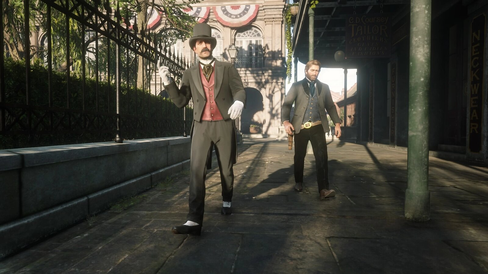
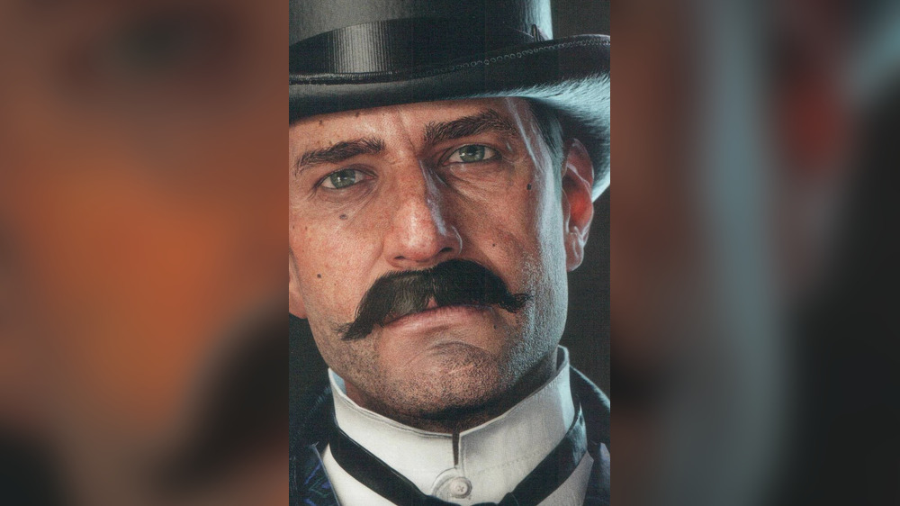
Personnage · Gang Van der Linde
Josiah Trelawny
Josiah Trelawny est un personnage secondaire de Red Dead Redemption 2 (2018), dont l'action se déroule en 1899, et un inconnu qui confie des missions dans Red Dead Online. Escroc et magicien, il va et vient dans le gang Van der Linde. Pendant le chapitre de Horseshoe Overlook, il apprend à la bande que des chasseurs de primes détiennent Sean MacGuire et aide Arthur Morgan et Javier Escuella à le libérer. Pendant le chapitre de Clemens Point, il sort d'un fourgon de prisonniers après qu'Arthur a rattrapé un évadé, Arthur et Charles Smith l'arrachent à des chasseurs de primes, puis Arthur et lui attaquent ensemble une diligence. À Saint-Denis, il monte le braquage du bateau à aubes Grand Korrigan. Il quitte la bande pour de bon à Beaver Hollow, avec la bénédiction d'Arthur.
Il est interprété par Stephen Gevedon, acteur américain.
- Nom
- Josiah Trelawny
- Origine
- Les Cornouailles, d'après ce qu'il dit à Uncle, tout en avouant n'y être jamais allé ; le Red Dead Wiki le présente comme britannique, né en Cornouailles
- Statut
- En vie quand il quitte le gang en 1899 ; ensuite, on ne fait plus que l'entendre chez lui, à Saint-Denis
- Famille
- Une épouse et deux fils à Saint-Denis (Tarquin et Cornelius, selon le Red Dead Wiki)
- Affiliation
- Gang Van der Linde (par intermittence, jusqu'en 1899)
- Rôle
- Escroc et magicien
- Cheval
- Gwydion
- Jeux
- Red Dead Redemption 2, Red Dead Online
- Voix
- Stephen Gevedon (capture de performance)
Biographie
Origines
Les jeux ne donnent aucune date de naissance pour Trelawny. Le Red Dead Wiki le présente comme britannique et le fait naître en Cornouailles, en Angleterre. Dans le jeu lui-même, cette origine ne repose que sur ses propres dires, lors d'une conversation au camp avec Uncle (voir Relations). Selon le wiki, il est venu aux États-Unis et faisait équipe avec Dutch van der Linde depuis plusieurs années en 1899. Pendant la chevauchée de "The First Shall Be Last", il confie à Arthur Morgan que ses propres parents l'auraient bien vendu pour une barrique de bière, et qu'à son avis ils ont essayé.
C'est un associé qui va et vient. Pendant la partie de pêche qui peut suivre "The New South", si Arthur pose la question, Hosea remarque que Trelawny a le don de disparaître quand ça lui chante, puis pousse Dutch à raconter l'histoire des latrines. Des semaines après avoir perdu Trelawny de vue, Dutch s'arrête pour se ravitailler dans une bourgade dont il a oublié le nom, ouvre la porte des latrines et le trouve assis là, journal en main. Trelawny le salue par son nom, demande qu'on le laisse tranquille et met tout sur le compte d'une huître avariée. Avant les événements de 1899, Trelawny a aussi installé une femme et deux fils à Saint-Denis, une famille qu'il tient à l'écart de la bande (voir Relations).
Red Dead Redemption 2 (1899)
Chapitre 2 : Horseshoe Overlook
Trelawny est loin de la bande depuis des mois : il ne participe ni au braquage raté du ferry à Blackwater ni à l'hiver à Colter. Il réapparaît à Valentine à la fin de "Americans at Rest", juste après qu'Arthur a battu Tommy dans la rue, devant le saloon. Dutch arrive avec lui (voir Relations). Arthur, qui le croyait parti pour New York, le salue par son nom. Trelawny raconte qu'il est allé à Blackwater chercher la bande et qu'il a constaté qu'elle n'y était guère appréciée. Il annonce ensuite que Sean MacGuire, disparu depuis le braquage du ferry, est vivant et aux mains de chasseurs de primes qui veulent voir combien le gouvernement paiera pour lui. Il pense que Sean est à Blackwater, mais il a entendu dire que ses ravisseurs allaient le déplacer.
Arthur fait remarquer que mettre les pieds à Blackwater serait du suicide, et Trelawny ajoute que c'est Dutch que les autorités recherchent. Dutch décide qu'il faut tenter le coup malgré tout : il envoie Charles Smith se renseigner et charge Trelawny d'emmener Javier Escuella, pendant qu'Arthur va se débarbouiller. Dans "Exit Pursued by a Bruised Ego", sur la route qui mène de Valentine au lac d'O'Creagh's Run, Hosea Matthews demande à Arthur de passer l'éponge sur l'année d'absence de John Marston. Arthur répond qu'il existe un code, que John connaît, et que John "ain't Trelawny" (n'est pas Trelawny). Si Sean n'a pas encore été sauvé et que le joueur aborde le sujet, Arthur explique aussi à Hosea que la nouvelle vient de Trelawny, parti aux renseignements avec Javier et Charles.
Dans "The First Shall Be Last", Charles et Javier surveillent Blackwater depuis une falaise, au nord, pendant que Trelawny cherche Sean. Javier prévient Arthur que la ville grouille de Pinkerton et de chasseurs de primes, avec des portraits de Dutch et de Hosea affichés partout : l'argent de la bande y restera pour l'instant. Trelawny revient en annonçant que les chasseurs de primes d'Ike Skelding emmènent Sean en remontant l'Upper Montana, vers une prison fédérale dans l'Ouest, et qu'ils feront d'abord halte dans l'un de leurs camps. Arthur envoie Charles sur le versant nord de la vallée et suit le bateau le long des falaises avec Javier et Trelawny. En route, Trelawny remarque que le gouvernement paraît très en colère, puis interroge Arthur sur Heidi McCourt, la jeune mère que Dutch aurait tuée sur le ferry, et sur l'argent resté à Blackwater. Arthur lui demande ce qu'est devenu New York, et Trelawny répond que la vie ne suit jamais une ligne droite.
Trelawny prend la tête et demande aux deux hommes de garder leurs armes au fourreau tant qu'il n'est pas certain que le prisonnier est bien Sean. À la jumelle, ils voient les chasseurs de primes tirer Sean du bateau, un sac sur la tête, puis l'emmener dans un canyon. Deux d'entre eux restent en faction au bord de la rivière. Trelawny traverse seul, leur annonce que sa femme, Bessie, est gravement malade, puis simule une crise à leurs pieds. Arthur et Javier passent derrière les gardes et les éliminent en silence. Trelawny se relève, leur laisse le soin de finir le travail et repart avant la fusillade. Arthur, Javier et Charles nettoient ensuite le canyon et le camp, puis décrochent Sean de l'arbre où il pend par les pieds.
Chapitre 3 : Clemens Point
Une fois la bande installée à Clemens Point, en Lemoyne, Dutch, Hosea et Arthur partent pêcher dans "The New South". À un passage à niveau, ils croisent Leigh Gray, le shérif de Rhodes, et son adjoint Archibald MacGregor, qui conduisent un chariot cellulaire. Trelawny est enfermé à l'arrière avec plusieurs prisonniers ; il salue les trois hommes et reconnaît s'être mis dans un petit pétrin. Dutch se présente au shérif sous le nom de Hoagy Macintosh et demande ce qu'a fait le prisonnier. Gray répond qu'on l'accuse d'avoir monté une escroquerie à l'investissement dans une mine d'or. Dutch décrit Trelawny comme un magicien et un imbécile, mais pas un mauvais bougre.
Les autres prisonniers, les frères Anderson, crochètent la serrure et courent vers un train qui passe. Dutch offre au shérif les services d'Arthur et l'envoie à leurs trousses, MacGregor en croupe, en remettant à plus tard la question de Trelawny. Avant même qu'Arthur ne rattrape le convoi, un des fuyards est jeté à bas du train par un château d'eau. Arthur monte ensuite à bord, se débarrasse de deux autres et assomme leur chef, Anders Anderson, qu'il porte jusqu'au bureau du shérif, à Rhodes. Dès que Dutch remet son ami sur le tapis, Gray fait sortir Trelawny de la cage et le prévient qu'il ne veut plus d'ennuis. Trelawny parle d'un malentendu et le remercie.
Seul avec Dutch, Hosea et Arthur, Trelawny raconte qu'il loue une roulotte à la sortie de la ville, derrière l'église, là où personne ne vient le chercher. Il explique que Rhodes est prise dans une querelle entre deux vieilles familles de planteurs, les Gray et les Braithwaite, sur fond d'or confédéré et de mariages, et Dutch charge Arthur et Hosea de se renseigner. Trelawny les met aussi en garde contre des primes sur la tête de la bande : des hommes rencontrés dans un camp près de la frontière de l'État en ont entendu parler, ainsi que de rumeurs sur des super agents, dans les bars, sur cinq cents miles au nord et à l'ouest. Dutch n'y voit que des racontars (voir Relations). Trelawny salue d'une révérence et regagne sa roulotte.
Plus tard, dans "Magicians for Sport", Arthur rappelle à Dutch l'avertissement de Trelawny. Dutch croit toujours à une rumeur, mais comme personne n'a de nouvelles de Trelawny depuis un moment, il envoie Arthur et Charles prendre de ses nouvelles. Dans la roulotte, ils trouvent un repas à moitié mangé, un lit défait et du sang sur le plancher, et en concluent que des chasseurs de primes l'ont enlevé. Ils suivent la piste dans les bois jusqu'à un campement où deux hommes sont assis à côté de la canne de Trelawny. Arthur et Charles en maîtrisent chacun un, et celui qu'ils interrogent révèle que Trelawny est retenu dans une ferme près du manoir Braithwaite.
À la ferme, Arthur et Charles trouvent Trelawny roué de coups, aux mains des chasseurs de primes, qui travaillent, selon la page de la mission, pour un certain Cole Stoudemire. Les ravisseurs se dispersent dans les champs de maïs des Braithwaite. L'un d'eux prend Arthur en otage et se fait tuer par Charles, puis deux autres sont éliminés dans la grange. Libéré, Trelawny assure qu'il n'a rien dit à ses geôliers. Il s'installe au camp de la bande tant qu'il est trop risqué de vivre seul, et rentre à Clemens Point avec Charles.
À Clemens Point, Trelawny propose une affaire à Arthur dans "Friends in Very Low Places". Les deux hommes se rendent au bureau de poste de Rhodes, où le guichetier, Alden Carruthers, vend des renseignements sur les diligences bonnes à dévaliser ; le Red Dead Wiki fixe le prix à deux dollars le tuyau. Trelawny surnomme les employés qui vendent ces tuyaux l'association des hommes découragés. Arthur paie pour un tuyau sur une diligence attendue à Siltwater Strand, et Alden ajoute qu'un employé de Strawberry, Hector Barlow, fait partie du même cercle. En chemin, Arthur s'inquiète de remettre les pieds à Strawberry après avoir fait évader Micah Bell de sa prison, et Trelawny le rassure. Trelawny plaisante : la bande sera bientôt assez célèbre pour faire la une d'un roman à quatre sous, et morte par la même occasion. Arthur préférerait qu'ils aient retrouvé leur liberté d'ici là.
Le plan exclut toute violence : pas d'arme dégainée, et un crochet pour forcer le coffre fixé à l'arrière de la diligence, que Trelawny fournit gratuitement si Arthur n'en a pas déjà un, d'après la page de la mission. Quand la diligence apparaît, Trelawny se porte à sa hauteur et convainc l'une des passagères, la chanteuse d'opéra Chester Damsen, de chanter pour lui, ce qui accapare aussi le cocher. Arthur, qui suit à distance sans se montrer, force le coffre, empoche l'argent et s'éloigne sans être vu. Une fois la diligence passée, Trelawny le rattrape et ils partagent le butin (la part du joueur figure dans le tableau des missions).
Il séjourne ensuite au camp de Clemens Point, où ses scènes de camp commencent après "Friends in Very Low Places" (voir Relations). La page que le Red Dead Wiki consacre à Trelawny range parmi ses missions "Blood Feuds, Ancient and Modern", l'attaque du manoir Braithwaite après l'enlèvement de Jack Marston, mais la page de la mission ne le mentionne jamais. Il suit la bande à Shady Belle, près de Saint-Denis.
Chapitre 4 : Saint-Denis
À Shady Belle, Trelawny passe du temps autour du feu (voir Relations). À Saint-Denis, Arthur peut trouver l'appartement où Trelawny vit avec sa femme et ses fils, en haut d'un escalier, derrière une porte bleue. Depuis le palier, il entend Trelawny parler à sa famille et distribuer des cadeaux. Si Arthur l'appelle, Trelawny répond à travers la porte, surpris, explique qu'il ne peut pas parler et propose de se voir au bureau lundi, le mot qu'il emploie pour désigner la bande devant les siens. D'après la page du Red Dead Wiki consacrée au massacre de Blackwater, Trelawny y évoque aussi un récent passage à Blackwater. De retour au camp, il revient sur la visite d'Arthur (voir Relations). Selon le wiki, on peut encore entendre Trelawny lui-même chez lui, avec sa famille, après son départ de la bande.
Trelawny apporte ensuite un nouveau coup à la bande. Dans "A Fine Night of Debauchery", il retrouve Arthur à Saint-Denis, plongé dans un journal qui annonce une partie de poker à bord du Grand Korrigan, un bateau-casino. La cible est Desmond Blythe, qui garde des garanties supplémentaires dans le coffre du bateau. Avec sa tenue, Arthur ne passera pas à une table de joueurs fortunés, lui explique Trelawny, qui le conduit chez un tailleur pour un costume, puis chez un barbier. Dans une voiture conduite par George, il expose le plan : Arthur se fera passer pour un pétrolier, le cocher et le croupier sont de leur côté, et Javier est à bord, déguisé en garde. D'après le Red Dead Wiki, Trelawny a fait en sorte que Leopold Strauss surveille les cartes de Blythe et transmette des signaux à Arthur.
Arthur laisse ses armes dans la voiture, puis les quatre hommes montent à bord et se séparent. Arthur bat Blythe deux fois, la seconde pour sa montre de poche Reutlinger, puis monte à la salle des coffres avec le chef de salle. Là, selon la page de la mission, Javier assomme un garde et tient le chef de salle en joue, puis Arthur le désarme ; l'homme cache une seconde arme, et Arthur l'abat avant de vider le coffre-fort. Pendant ce temps, Trelawny discute avec Blythe au bar, et Blythe accuse Arthur d'avoir triché. Quand le garde dont Javier a pris l'uniforme donne l'alerte, une fusillade éclate. Les quatre hommes se frayent un passage jusqu'au pont à coups de feu, plongent dans le fleuve et rejoignent la berge. Une fois l'argent partagé (voir Missions), Strauss estime que la montre volée a de la valeur, Arthur la reprend, et chacun part de son côté. Trelawny ne reparaît plus au camp avant le chapitre 6.
Chapitre 6 : Beaver Hollow
Trelawny ne participe ni au braquage de la banque de Saint-Denis ni aux événements du chapitre 5. Il est de retour auprès de la bande à Beaver Hollow, dans le Roanoke Ridge, alors que le groupe se désagrège. "The Fine Art of Conversation" s'ouvre sur Arthur qui le surprend en train de boucler ses valises, prêt à quitter le camp une fois de plus. Trelawny promet de revenir. Arthur lui dit de partir pour de bon, puisque la bande n'a plus aucun espoir, et le laisse s'en aller avec sa bénédiction. Trelawny le remercie pour son amitié et s'éclipse sans bruit. Rains Fall arrive alors au camp, et la mission se poursuit sans lui.
Il ne se trouve plus au camp après cette mission et ne réapparaît plus dans l'histoire. On ne le voit pas dans l'épilogue de 1907. Hormis sa voix, qu'on entend encore dans son appartement de Saint-Denis, le jeu ne dit rien de ce qu'il devient.
Personnalité
La description officielle de Trelawny publiée par Rockstar Games en septembre 2018 dit, dans sa version française : "Magicien et escroc haut en couleur, la personnalité de Trelawny est difficile à cerner, mais il veille toujours à apporter de bonnes pistes."
Une page de personnage tirée d'un guide officiel, reproduite sur le Red Dead Wiki, va plus loin. Elle le présente comme un magicien, escroc et filou "with a taste for the finer things in life" (qui a le goût des belles choses), et précise qu'il "is one of the only people Dutch allows to drift in and out of the gang" (fait partie des rares que Dutch laisse aller et venir dans la bande). Le guide ajoute qu'il surgit de nulle part puis disparaît, comme dans l'un de ses tours, qu'il est difficile à cerner et pas toujours digne de confiance, mais qu'il apporte régulièrement de bons tuyaux et distrait le camp. Il conclut : "A cockroach in fancy britches, Trelawny is able to get into nooks and crannies that the rest of the gang can't." (un cafard en culotte de soie, capable de se glisser dans des recoins où le reste de la bande ne passe pas).
En mission, il préfère la ruse aux coups de feu (voir la biographie). Il parle beaucoup, au grand dam de Javier, qui fait la route avec lui pendant la recherche de Sean (voir Javier Escuella). Il cache à sa femme et à ses fils sa vie au sein de la bande (voir la biographie).
Dans ses propres mots
En chemin avec Arthur, dans "The First Shall Be Last", il justifie sa longue absence : "Much as I love dodging the law and sleeping in the dirt with you derelicts, I do have other business to attend to." (j'ai beau adorer fuir la loi et dormir par terre avec vous autres, bande de vauriens, j'ai d'autres affaires à mener). Un peu plus loin, il rappelle à Arthur ce qu'il apporte à la bande : "But without me you'll not find the caliber of victim that I find." (mais sans moi, vous ne trouverez pas des pigeons du calibre de ceux que je déniche). Pendant la même chevauchée, il prévient Arthur et Javier : "Keep your guns away until we know it's Sean, okay? I know what you two are like." (rangez vos armes tant qu'on n'est pas sûrs que c'est Sean, d'accord ? je vous connais, tous les deux). Enfermé dans le fourgon du shérif Gray, dans "The New South", il répond au salut moqueur de Dutch par un "I seem to have gotten myself in a spot of bother." (on dirait que je me suis mis dans un petit embarras). Le Red Dead Wiki ouvre sa page sur une autre de ses répliques : "How can romance ever be silly? It's all we have." (comment l'amour pourrait-il être idiot ? c'est tout ce que nous avons).
Noms
On l'appelle le plus souvent Trelawny, mais Dutch et Arthur emploient aussi son prénom, Josiah : "Josiah, take Javier", dit Dutch dans "Americans at Rest", et "Javier, Josiah, come on", lance Arthur dans "The First Shall Be Last". L'infobox du Red Dead Wiki lui prête un seul pseudonyme, Giuseppe Muldoon, employé une fois dans le Lemoyne, en le signalant comme incertain ; le wiki français l'écrit Giuseppe Muldon et le rattache au braquage de la diligence. D'après la page du wiki consacrée au contenu coupé, les fichiers du jeu orthographient parfois son nom Trelawney. Le wiki rappelle enfin que Trelawny est une variante de ce nom de famille cornouaillais, qu'il traduit par une personne venue d'un bourg doté d'une église.
Apparence
Le portrait du guide montre un homme aux cheveux sombres, aux yeux clairs et à l'épaisse moustache brune, coiffé d'un haut-de-forme noir, en redingote sombre sur un gilet bleu à motifs cachemire, avec une cravate noire, des gants blancs et un pantalon gris-vert pâle. Le Red Dead Wiki le dit d'âge mûr, cheveux brun foncé peignés en arrière, moustache taillée, et toujours en tenue habillée. Selon le wiki, il fait partie, avec Sean et Cleet, des trois membres de la bande qui n'ont pas de tenue d'hiver.
Relations

Arthur Morgan
Arthur est le partenaire de Trelawny sur la plupart de ses coups : la recherche de Sean, la diligence et le bateau à aubes (voir la biographie). Pendant la partie de pêche qui peut suivre "The New South", Arthur estime que Trelawny lui doit une fière chandelle pour la capture des frères Anderson. S'il pose ensuite des questions sur lui, il le compare à une mauvaise pièce qui revient toujours ("like a bad penny"), puis, après l'histoire des latrines racontée par Dutch, s'amuse à l'idée qu'il en existe peut-être une centaine (voir Citations). Selon la page du Red Dead Wiki consacrée aux relations d'Arthur, celui-ci le décrit un jour comme "as slippery as an eel in an oil slick" (glissant comme une anguille dans une nappe de pétrole).
Au chapitre 6, Arthur le laisse partir avec sa bénédiction (voir la biographie).

Dutch van der Linde
Dutch amène Trelawny à Arthur, à Valentine, en lançant "Look who we found sniffing about" (regardez qui on a trouvé à fureter dans le coin). Quand Trelawny lui fait remarquer que c'est lui qu'on veut, il répond "Always is" (comme toujours). Dans "The New South", il parle de Trelawny au shérif Gray comme d'un "silly fancy fop" (un petit dandy ridicule), puis se porte garant de lui (voir la biographie). Une fois Trelawny libéré, Dutch promet au shérif de le remettre dans le droit chemin.
Pendant la partie de pêche facultative qui suit "The New South", si Arthur demande où va Trelawny, Dutch répond "Everywhere and nowhere" (partout et nulle part), reconnaît que sans lui la bande n'aurait jamais récupéré Sean, et raconte l'histoire des latrines (voir la biographie). Si Arthur l'interroge plutôt sur les chasseurs de primes, Dutch balaie les super agents d'un revers de main : pour lui, Trelawny en rajoute, en vrai showman ("over-egging the pudding like the showman he is").

Hosea Matthews
Hosea accompagne Dutch et Arthur quand ils trouvent Trelawny dans le fourgon de prisonniers, dans "The New South". Quand Trelawny parle de grosses primes, Hosea lui demande d'où il tient cela. Pendant la partie de pêche qui peut suivre, il concède que Trelawny a des dettes envers à peu près tout le monde, mais que ses renseignements sont fiables (voir Citations).

Charles Smith
Dutch envoie Charles, Trelawny et Javier aux nouvelles de Sean dans "Americans at Rest". Dans "Magicians for Sport", Charles et Arthur remontent la piste de Trelawny, de sa roulotte saccagée jusqu'à la ferme où des chasseurs de primes le retiennent (voir la biographie). Charles et Trelawny rentrent ensuite ensemble au camp.

Javier Escuella
Dutch confie Javier à Trelawny pour retrouver Sean (voir Noms). Quand Arthur les rejoint, dans "The First Shall Be Last", et demande à Javier pourquoi il est si silencieux, celui-ci accuse Trelawny de n'avoir pas cessé de parler depuis Valentine (voir Citations). Les deux hommes se retrouvent sur le coup du bateau à aubes (voir la biographie).

Sean MacGuire
Trelawny apprend à la bande que Sean est vivant, aux mains de chasseurs de primes, puis aide Arthur et Javier à l'atteindre (voir la biographie).
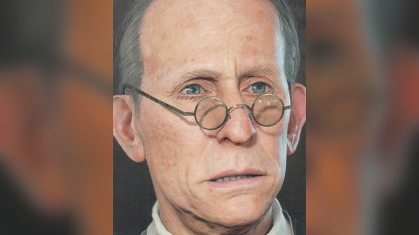
Leopold Strauss
Strauss fait partie du coup du bateau à aubes monté par Trelawny, où il aide Arthur à la table de poker (voir la biographie). Selon la page du wiki consacrée aux scènes de camp, ni Trelawny ni Strauss n'assistent à la fête du retour de Jack, à Shady Belle.

Bill Williamson
À Valentine, Trelawny salue Bill en le trouvant "looking well as can be" (en aussi bonne forme que possible). D'après Hosea, Bill et Arthur étaient partis ailleurs le jour où Dutch a trouvé Trelawny dans les latrines (voir la biographie). Quand "Friends in Very Low Places" est la seule mission principale encore ouverte avant "A Short Walk in a Pretty Town", Trelawny transmet un message de Bill : celui-ci attend Arthur à Rhodes pour travailler pour les Gray (page de la mission).

Uncle
Au coin du feu de Shady Belle, Uncle demande à Trelawny d'où il vient. Trelawny répond d'abord les lunes de Jupiter, puis, après quelques suppositions d'Uncle, les Cornouailles, qu'il présente comme le berceau des vrais Celtes. Quand Uncle lui demande à quoi ça ressemble, il reconnaît n'y être jamais allé. Uncle répond qu'il vient de l'Ohio, et que lui, au moins, y a mis les pieds.

Karen Jones
À Clemens Point, Trelawny demande à Karen quel livre elle lit près des chariots ; elle répond que c'est une romance idiote. Quand Susan les interrompt pour demander si Karen compte travailler un jour, Trelawny fait apparaître un corbeau dans sa main ; Susan s'en va écœurée, et Karen rit.

Mary-Beth Gaskill
À Clemens Point, Trelawny trouve Mary-Beth en train de lire près des chariots et lui dit qu'elle est jolie comme un cœur. Il ouvre ensuite son livre, d'où s'envole un corbeau. Une fois qu'il est parti, Karen le traite de diable, et Mary-Beth répond qu'il est gentil, pour un diable.

Susan Grimshaw
C'est Susan qui fait les frais du tour du corbeau, à Clemens Point (voir Karen Jones).

Micah Bell
Les deux hommes ne partagent aucune scène dans le jeu final. Une scène de camp entre eux a été enregistrée puis coupée (voir Conception et interprétation).
His wife and sons
Trelawny a une femme et deux fils, prénommés Tarquin et Cornelius selon le Red Dead Wiki, qui vivent dans un appartement de Saint-Denis, où Arthur peut les entendre (voir la biographie). À Shady Belle, Trelawny dit à Arthur qu'il sait qu'il est passé par là. Arthur avoue qu'il ignorait que Trelawny était marié ; Trelawny répond qu'il aime sa femme, mais qu'il ne tient pas en place.
Alden Carruthers
Alden vend à Trelawny et à Arthur le tuyau sur la diligence dans "Friends in Very Low Places" (voir la biographie). Le Red Dead Wiki range Trelawny parmi les associés d'Alden.
Leigh Gray
Le shérif de Rhodes détient Trelawny dans son fourgon cellulaire (voir la biographie). Une fois qu'Arthur lui a ramené Anders Anderson, le meneur des évadés, Gray libère Trelawny en lançant "Your idiot friend is free to go" (votre ami l'imbécile peut partir).
Compétences, armes et chevaux
Tours de magie
Trelawny fait des tours de prestidigitation au camp : à Clemens Point, il fait surgir un corbeau de sa main, puis un autre d'un livre (voir Karen Jones et Mary-Beth Gaskill). D'après la page de la mission "Friends in Very Low Places", on peut l'observer aux jumelles, avant le début de la mission, en train de faire un tour avec une carte à jouer.
Escroqueries, diversions et tuyaux
Dans chacune des trois opérations qu'il mène avec Arthur, son rôle à lui relève de la comédie : un malaise simulé au bord de la rivière, une sérénade réclamée à la diligence, une conversation avec Blythe au bar du bateau à aubes (voir la biographie). Son autre atout, c'est l'information. Il retrouve l'endroit où Sean est détenu, a ses entrées chez les employés des postes qui vendent des tuyaux (voir Alden Carruthers) et repère la partie de poker de Desmond Blythe à bord du Grand Korrigan. Le Red Dead Wiki ajoute qu'il parle un peu l'italien.
Armes et cheval
Le Red Dead Wiki lui attribue un revolver Cattleman. Son cheval s'appelle Gwydion, un étalon Appaloosa à robe léopard brune, marqué d'une petite étoile en tête, selon la page du wiki consacrée au cheval. Trelawny le monte dans "The First Shall Be Last" et "Friends in Very Low Places". Le wiki relève qu'un cheval à la robe identique est en vente à l'écurie de Tumbleweed pendant l'épilogue. Gwydion est aussi le nom d'une figure de filou de la mythologie galloise.
Missions
Les Red Dead Wiki anglais et français recensent les huit mêmes missions principales de Red Dead Redemption 2 pour Trelawny, dont trois qu'il confie lui-même à Arthur. Le tableau ci-dessous intègre aussi la mission où il n'est qu'évoqué. Le Red Dead Wiki ne lui attribue aucune victime.
Red Dead Redemption 2, missions principales
| Mission | Chapitre | Rôle de Trelawny |
|---|---|---|
| Americans at Rest | 2. Horseshoe Overlook | Première apparition. Il arrive à Valentine avec Dutch après la bagarre du saloon et annonce que Sean est vivant, aux mains de chasseurs de primes. |
| Exit Pursued by a Bruised Ego | 2. Horseshoe Overlook | Mentionné. Sur la route du lac, Arthur dit à Hosea que John "ain't Trelawny" ; si Sean n'a pas encore été sauvé (dialogue facultatif), il précise aussi que la nouvelle concernant Sean vient de Trelawny. |
| The First Shall Be Last | 2. Horseshoe Overlook | Éclaireur. Il apprend où Sean est emmené, guide Arthur et Javier le long de la rivière et détourne l'attention de deux gardes en simulant une crise, puis s'en va avant la fusillade. |
| The New South | 3. Clemens Point | Prisonnier. Retrouvé dans le chariot cellulaire du shérif Leigh Gray, accusé d'une escroquerie à l'investissement minier, il est libéré une fois qu'Arthur a capturé Anders Anderson, le meneur des évadés. |
| Magicians for Sport | 3. Clemens Point | Enlevé. Retenu par des chasseurs de primes près du manoir Braithwaite, il est libéré par Arthur et Charles et s'installe au camp de la bande. |
| Friends in Very Low Places | 3. Clemens Point | Donneur de la mission. Il achète un tuyau à Alden Carruthers, à la poste de Rhodes, et occupe la chanteuse d'opéra Chester Damsen pendant qu'Arthur vide le coffre de la diligence. Récompense pour le joueur : 206,65 dollars et un crochet. |
| Blood Feuds, Ancient and Modern | 3. Clemens Point | Citée par les pages du personnage des deux wikis ; la page de la mission ne le mentionne pas. |
| A Fine Night of Debauchery | 4. Saint-Denis | Donneur de la mission. Il monte le braquage du Grand Korrigan, habille Arthur pour la partie de poker contre Desmond Blythe et regagne la rive à la nage avec les autres après la fusillade. Récompense pour le joueur : 825 dollars et la montre de poche Reutlinger. |
| The Fine Art of Conversation | 6. Beaver Hollow | Départ. Indiqué avec Rains Fall comme donneur de la mission, il quitte définitivement la bande au début de celle-ci, avec la bénédiction d'Arthur. |
Citations
Les répliques ci-dessous sont reproduites telles qu'elles sont prononcées dans le jeu, en anglais, avec la mission et la personne à qui elles s'adressent. Celles qui viennent de missions sans transcription sur le Red Dead Wiki sont signalées comme tirées de sa liste de citations.
Retour dans la bande
Making new friends again I see, Arthur.
Americans at Rest (RDR2, chapitre 2), sa première réplique du jeu, à Arthur après le combat contre Tommy. Traduction : « Toujours à te faire de nouveaux amis, à ce que je vois, Arthur. »And miss all this glamour? You must be joking.
Americans at Rest (RDR2, chapitre 2), à Arthur, qui le croyait parti pour New York. Traduction : « Et rater tout ce glamour ? Vous plaisantez. »I went to Blackwater looking for you gentlemen. You're not very popular there it seems.
Americans at Rest (RDR2, chapitre 2), à Arthur et Dutch. Traduction : « Je suis allé à Blackwater vous chercher, messieurs. On dirait que vous n'y êtes pas très populaires. »It's you they want, Dutch.
Americans at Rest (RDR2, chapitre 2), quand la bande envisage d'aller chercher Sean à Blackwater. Traduction : « C'est vous qu'ils veulent, Dutch. »
Le sauvetage de Sean
Oh it must be wonderful to have such trust in one's parents. Mine would have sold me for a hogshead of ale... in fact I think they tried.
The First Shall Be Last (RDR2, chapitre 2), à Arthur, qui vient de dire que Dutch et Hosea savent où est l'argent. Traduction : « Oh, ce doit être merveilleux d'avoir une telle confiance en ses parents. Les miens m'auraient vendu pour une barrique de bière... d'ailleurs, je crois qu'ils ont essayé. »Gentlemen, gentlemen! Excuse me, dear brothers, my wife has taken ill, gravely ill!
The First Shall Be Last (RDR2, chapitre 2), aux deux chasseurs de primes qui gardent la rivière, avant de simuler une crise. Traduction : « Messieurs, messieurs ! Excusez-moi, chers frères, ma femme est tombée malade, gravement malade ! »A pleasure as always, gentlemen. I think you have it from here.
The First Shall Be Last (RDR2, chapitre 2), à Arthur et Javier, avant de repartir. Traduction : « Un plaisir, comme toujours, messieurs. Je crois que vous pouvez vous débrouiller sans moi. »
Rhodes et Saint-Denis
I promise you, this was all just a big misunderstanding. However, I want to thank you from the bottom of my heart.
The New South (RDR2, chapitre 3), au shérif Leigh Gray, au moment de sortir de la cage à Rhodes. Traduction : « Je vous assure, tout cela n'était qu'un grand malentendu. Cela dit, je tiens à vous remercier du fond du cœur. »The whole town is trapped in this interminable feud between the two families.
The New South (RDR2, chapitre 3), à Dutch, au sujet des Gray et des Braithwaite. Traduction : « Toute la ville est prisonnière de cette interminable querelle entre les deux familles. »You know me, I like to make friends in low places.
Friends in Very Low Places (RDR2, chapitre 3), à Arthur (liste de citations du Red Dead Wiki). Traduction : « Tu me connais, j'aime me faire des amis dans les bas-fonds. »A discouraged man is no man at all, Alden... no man at all.
À Alden Carruthers, le guichetier de la poste de Rhodes (liste de citations du Red Dead Wiki). Traduction : « Un homme découragé n'est pas un homme, Alden... pas un homme du tout. »Everyone is the author of his own good fortune.
A Fine Night of Debauchery (RDR2, chapitre 4), à Arthur (liste de citations du Red Dead Wiki). Traduction : « Chacun est l'artisan de sa propre fortune. »There's plenty I don't like about you but I have the good manners to keep my mouth shut.
À Desmond Blythe (liste de citations du Red Dead Wiki). Traduction : « Il y a bien des choses que je n'aime pas chez vous, mais j'ai la politesse de me taire. »
Ce qu'on dit de lui
He hasn't stopped talking since we left you in Valentine. It's the longest ride of my life.
Javier Escuella à Arthur, The First Shall Be Last (RDR2, chapitre 2), quand Arthur s'étonne de son silence. Traduction : « Il n'a pas arrêté de parler depuis qu'on t'a laissé à Valentine. C'est la plus longue chevauchée de ma vie. »He is a magician, I know him. He's a fool... but, he is not a bad feller.
Dutch van der Linde au shérif Leigh Gray, The New South (RDR2, chapitre 3). Traduction : « C'est un magicien, je le connais. C'est un imbécile... mais ce n'est pas un mauvais bougre. »Trelawny owes... everyone for something, but his information is good.
Hosea Matthews à Arthur et Dutch, The New South (RDR2, chapitre 3), pendant la partie de pêche qui peut suivre la mission, après qu'Arthur a dit que Trelawny lui devait une fière chandelle pour la capture des frères Anderson. Traduction : « Trelawny doit... quelque chose à tout le monde, mais ses renseignements sont bons. »Hey, maybe there are actually a hundred Trelawnys.
Arthur Morgan, The New South (RDR2, chapitre 3), pendant la partie de pêche facultative, après l'histoire des latrines racontée par Dutch. Hosea répond : "What a terrible thought." Traduction : « Hé, peut-être qu'il y a en fait cent Trelawny. » (« Quelle idée épouvantable. »)I ain't too sure. This is what tends to happen when you leave Trelawny in charge of planning. All garnish, no meat.
Arthur Morgan, A Fine Night of Debauchery (RDR2, chapitre 4), quand Javier demande comment ils vont quitter le Grand Korrigan (citation en exergue de la page de la mission). Traduction : « J'en sais trop rien. Voilà ce qui arrive quand on confie la préparation à Trelawny. Que de la garniture, pas de viande. »Of course he'll talk. He'd sell his own sister to save a train fare! He don't know how not to talk...
Arthur Morgan à propos de Trelawny (liste de citations du Red Dead Wiki, qui ne précise pas la mission). Traduction : « Bien sûr qu'il va parler. Il vendrait sa propre sœur pour économiser un billet de train ! Il sait pas se taire... »He somehow manages to be both lucky and unlucky at the same time. But he always finds some way to pay us back. I guess that's his special talent... keeping fish on the line.
Arthur Morgan à propos de Trelawny (liste de citations du Red Dead Wiki, qui ne précise pas la mission). Traduction : « Il arrive à avoir de la chance et de la malchance en même temps. Mais il trouve toujours un moyen de nous rembourser. C'est sans doute son talent particulier... garder le poisson au bout de la ligne. »
Conception et interprétation
Le casting
Trelawny est interprété par Stephen Gevedon, acteur américain, en capture de performance. Il a coécrit le film d'horreur Session 9 (2001) avec son réalisateur, Brad Anderson, et y joue le rôle de Mike. À la télévision, il a eu des rôles récurrents dans Oz (1997), Show Me a Hero (2015), Madoff (2016) et The Deuce (2017 à 2018).
Entretien
Gevedon a parlé du rôle dans le podcast ComiCulture BEYOND, animé par Kevin Caldwell, dans un épisode mis en ligne le 14 octobre 2019. D'après le résumé qu'en donne Wikipédia, il ignorait, au moment du casting, qu'il s'agissait d'un jeu vidéo, et pensait que l'enregistrement durerait environ une semaine. On lui a présenté Trelawny comme différent des autres membres de la bande, mieux habillé et plus professionnel, mais encore un peu brut de décoffrage ("rough around the edges").
Il décrit l'accent de Trelawny comme une "bad Katharine Hepburn" (une mauvaise imitation de Katharine Hepburn). Il l'a choisi en partie parce qu'il n'était pas à l'aise à l'idée de prendre un véritable accent anglais devant l'équipe britannique, en partie pour garder au personnage son mystère. Rockstar a tant apprécié sa prestation que le rôle a été étoffé, et la femme et les enfants de Trelawny, gardés secrets dans le jeu, ont été ajoutés dans les dernières années du développement.
Contenu coupé
D'après le Red Dead Wiki, une mission du chapitre 3, baptisée "tre2" dans les fichiers, devait être confiée par Trelawny. Arthur et Dutch y affrontaient des chasseurs de primes à bord d'un train ; Benjamin Byron Davis, l'interprète de Dutch, a précisé en interview qu'ils venaient de Boston. Des animations de la mission montrent les deux hommes cachés dans une voiture-bar, et un personnage inutilisé, Nial Whelan, jeté par une fenêtre par Arthur.
Une scène de camp avec Micah Bell a aussi été enregistrée, puis écartée. Micah y traite Trelawny de rat, puis de serpent ; Trelawny lui conseille de regarder dans son chapeau, d'où tombe un serpent corail, au grand effroi de Micah. Les fichiers contiennent un revolver Double-Action personnalisé pour Trelawny, à canon court et crosse blanche selon le wiki, prévu pour une cinématique de "A Fine Night of Debauchery". On y trouve aussi des vêtements inutilisés (une combinaison sans manches, trois gilets, deux cravates, un pantalon, des bottes) et une commande d'objet abandonnée : une serre d'aigle.
Une illustration conceptuelle publiée par le wiki montre Trelawny avec une canne, et une autre le réunit avec Sean, Sadie, Lenny et Micah.
Accueil
La critique
Dans une tribune publiée par Polygon le 22 novembre 2018, "Red Dead Redemption 2 is a confection of cowboy clichés" (Red Dead Redemption 2, une confiserie de clichés de cow-boys), Colin Campbell range Trelawny parmi les personnages types de la bande : "Josiah Trelawny is an affectatious dandy, a gentleman thief with swell togs and a crisp English accent." (Josiah Trelawny est un dandy affecté, un gentleman cambrioleur aux beaux habits et à l'accent anglais impeccable). Le même passage cite aussi Susan Grimshaw, Sadie Adler, Leopold Strauss et le révérend Swanson.
Dans le classement des 24 membres du gang Van der Linde établi par la rédaction de Game Informer et publié le 27 décembre 2018, Trelawny arrive 8e. La rédaction le juge "one of the most interesting members of the gang" (l'un des membres les plus intéressants de la bande) et le décrit comme un filou beau parleur qui va et vient à sa guise. Elle relève que la bande doit souvent le tirer d'affaire, mais qu'il la rembourse en tuyaux et en diversions, et promet une belle surprise aux joueurs qui découvrent son secret à Saint-Denis.
Autres médias et postérité
Red Dead Online
Trelawny fait partie des inconnus qui proposent des missions dans Red Dead Online, dont l'histoire se déroule en 1898, un an avant le jeu principal. Le Red Dead Wiki cite quatre membres de la bande Van der Linde présents dans le mode en ligne : Trelawny, Sadie Adler, Joe et Sean MacGuire ; Sadie et Joe n'ont pas encore rejoint la bande à ce moment-là. Le joueur trouve Trelawny sur le perron de la roulotte qu'il loue à la sortie de Rhodes.
Lors de leur première rencontre, Trelawny demande au joueur si c'est sa femme qui l'envoie, puis explique que c'est une longue histoire. Il pointe un revolver Cattleman sur sa propre tempe en disant qu'il n'en peut plus, puis se ravise, et le revolver se change en oiseau et s'envole. Il clame son amour pour sa famille, se dit perdu, puis passe à autre chose et de proposer un travail qu'il présente comme parfaitement légal : voler un cheval appartenant à Catherine Braithwaite et le livrer à son contact au ranch Hill Haven, à Scarlett Meadows. Il propose ensuite d'autres missions depuis sa roulotte. D'après le Red Dead Wiki, la plupart rapportent au joueur de l'honneur positif.
| Mission d'exploration | Ce que fait le joueur |
|---|---|
| Horse Theft | Vole un cheval et le livre ; la version de Trelawny part de Rhodes et s'y termine. |
| Rescue | Libère un captif et le ramène ; la version de Trelawny va de Rhodes à Trapper's Cabin. |
| Caravan Escort | Escorte deux chariots et les défend contre des bandits ; la version de Trelawny va de Rhodes à Lagras. |
| On The Hunt | Traque un prédateur qui menace les habitants. |
| Destroy Supplies | Détruit des caisses ou des chariots de marchandises ; les versions de Trelawny vont de Rhodes à Caliga Hall ou à Bolger Glade. |
The truth is... I just can't take it anymore! Oh... no, that's not the truth. I don't know the bloody truth. I'm lost. I'm a lost soul, my friend.
Red Dead Online, au joueur lors de leur première rencontre (liste de citations du Red Dead Wiki). Traduction : « La vérité, c'est que... je n'en peux plus ! Oh... non, ce n'est pas la vérité. Je ne connais pas cette fichue vérité. Je suis perdu. Je suis une âme perdue, mon ami. »
Promotion
Rockstar a publié une illustration officielle de Trelawny pour Red Dead Redemption 2. Le 6 septembre 2018, Rockstar diffuse sur Twitter son portrait et sa description, dans une série consacrée aux membres de la bande, et The Hollywood Reporter reprend la série le lendemain. Sur l'image qui réunit les 23 membres de la bande, en tête de la liste des personnages du jeu sur Wikipédia, Trelawny est le dernier personnage du premier rang, à côté de Strauss.
Anecdotes
- D'après le Red Dead Wiki, le nom de Trelawny peut figurer dans le registre du camp comme donateur d'un objet avant même sa première venue au camp de Clemens Point.
- Avant le braquage du ferry, Arthur note dans son journal qu'on lui a parlé d'un homme qui ressemblait à Trelawny, que la bande n'avait pas revu depuis des mois. Le Red Dead Wiki relève la forte ressemblance de Trelawny avec l'Homme mystérieux de Red Dead Redemption.
- Dans "Friends in Very Low Places", le joueur peut abattre Chester Damsen et les autres occupants de la diligence pendant que Trelawny les distrait. D'après la page de la mission, Trelawny peste alors contre les amateurs avec qui il travaille et s'en va ; Arthur le retrouve plus tard à un carrefour, où il se dit déçu qu'on n'ait pas respecté ses consignes.
- Si Arthur porte déjà un costume au début de "A Fine Night of Debauchery", Trelawny lui fait savoir qu'il ne convient pas pour l'occasion. Le journal de cette scène d'ouverture est le Saint Denis Times n° 47, que le joueur peut acheter.
- Trelawny fait partie des membres de la bande, avec Micah, Lenny, Bill, Javier, Tilly et Uncle, absents lors de l'attaque des O'Driscoll contre Shady Belle dans "Horsemen, Apocalypses" ; le jeu n'explique jamais leur absence.
- D'après le Red Dead Wiki, il existe une très faible probabilité que Trelawny tente de parler de Guarma avec Arthur à Beaver Hollow.
- La mission d'inconnu "Of Men and Angels" doit être terminée avant "The Fine Art of Conversation", la mission du départ de Trelawny, faute de quoi elle n'est plus disponible.
- Sa roulotte, à la sortie de Rhodes, peut encore être visitée en 1907, délabrée et sans locataire.
Galerie
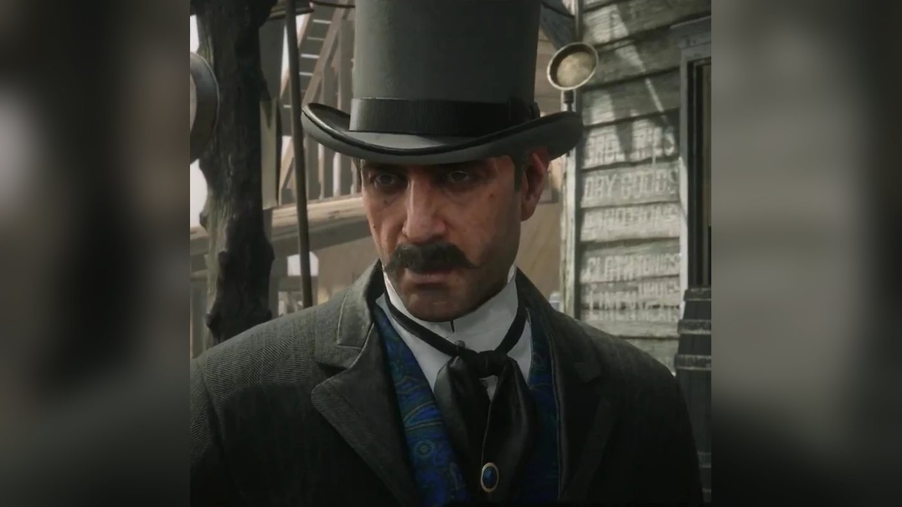
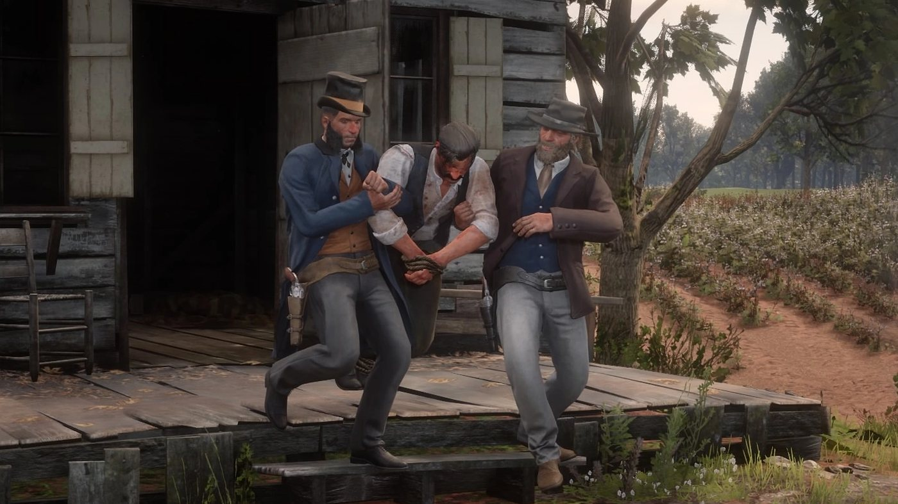
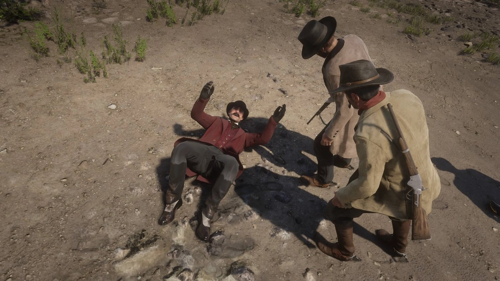
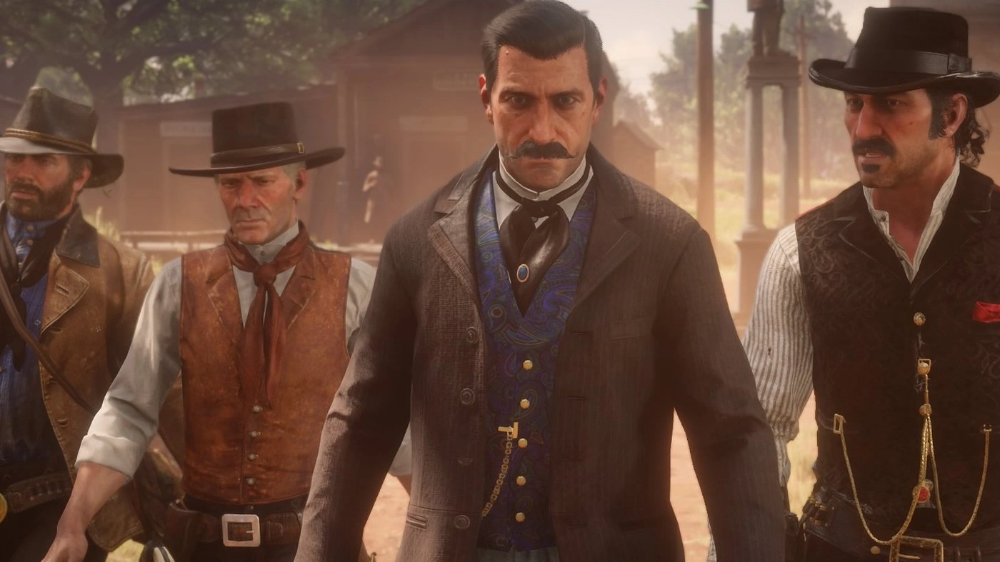
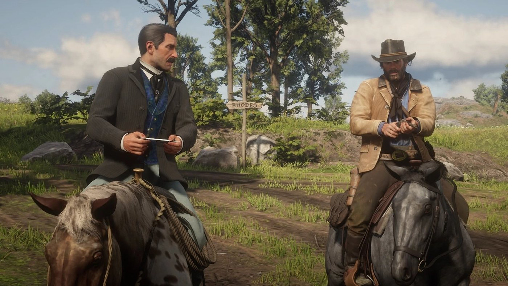
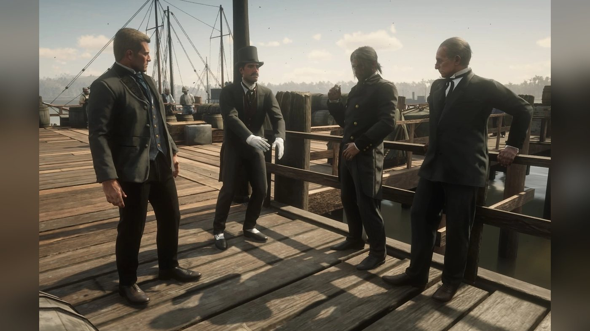
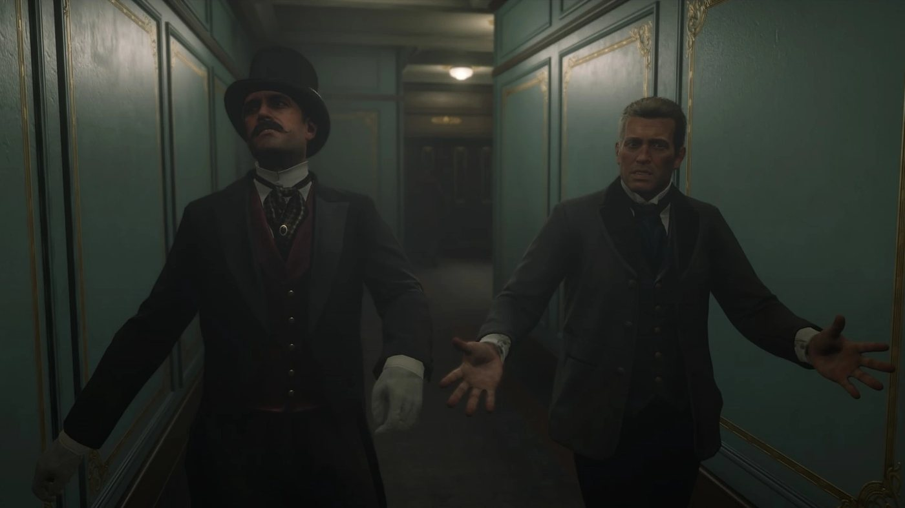
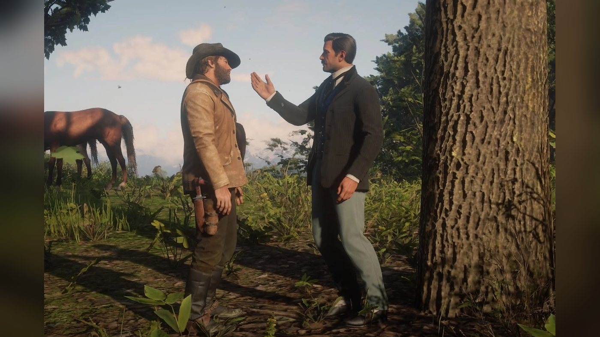
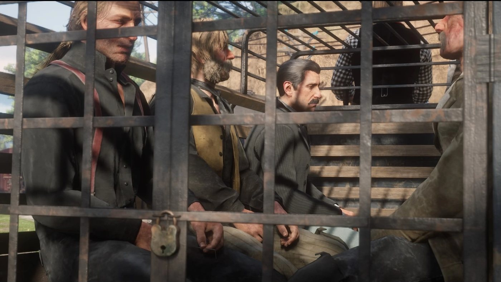
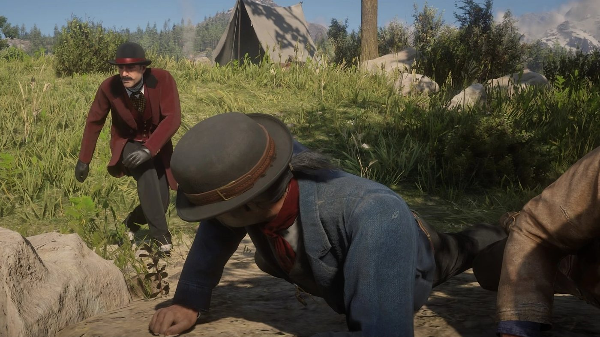
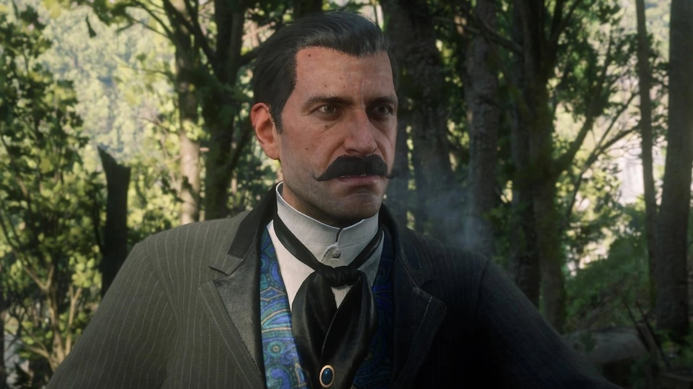
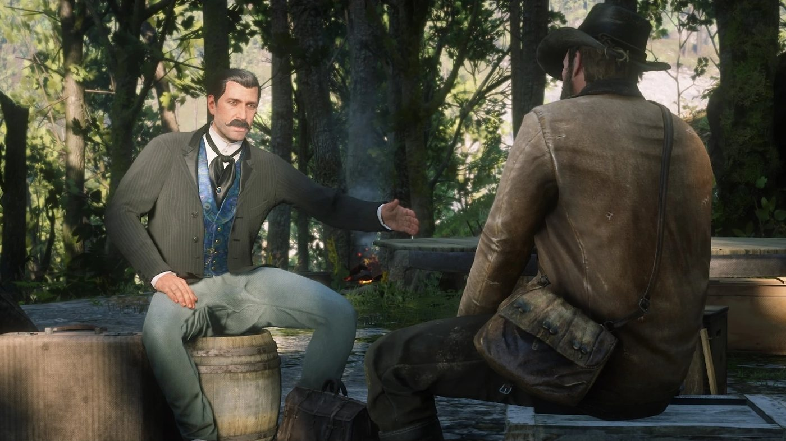
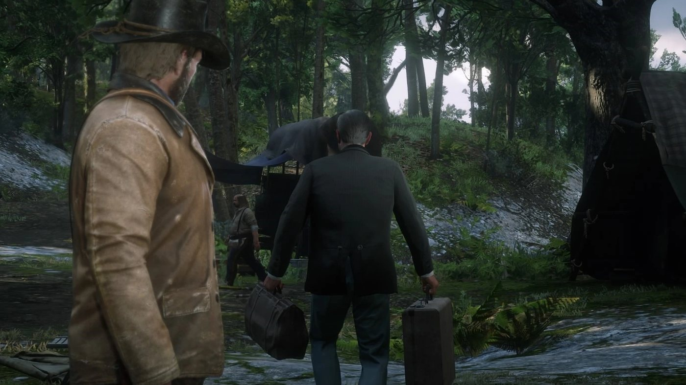
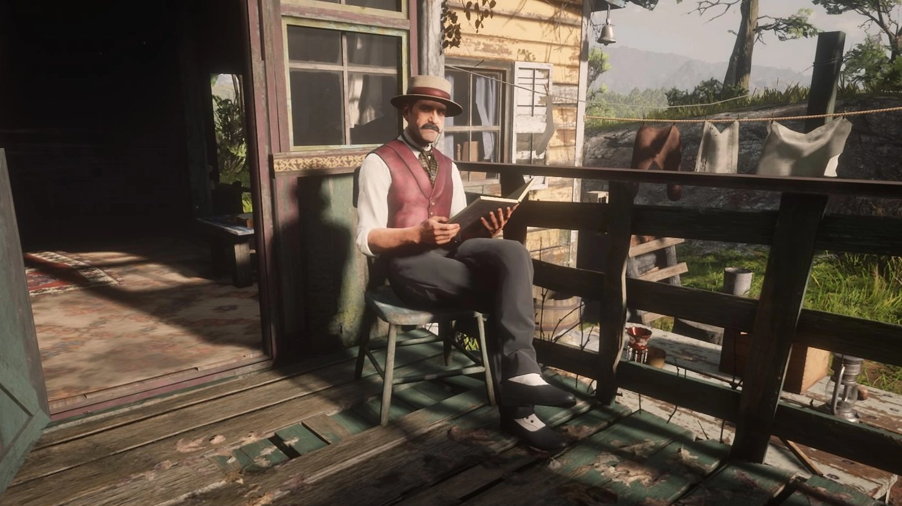
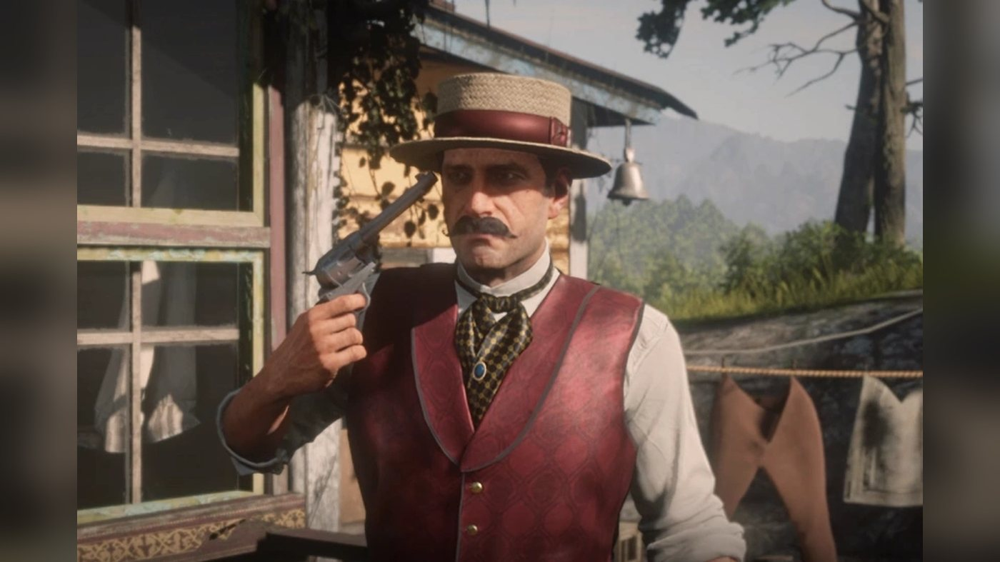